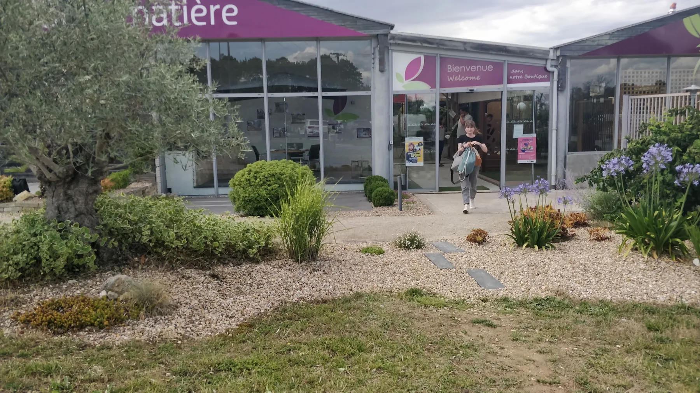

Entreprises & collectivités
Végétaliser les lieux que l’on partage.
Aménagement de zones fleuries, végétalisation urbaine et entretien : un accompagnement dédié aux espaces professionnels et collectifs.
Présenter un projet →
Solutions professionnelles
Un interlocuteur pour suivre l’ensemble.
Les besoins des entreprises, résidences et collectivités demandent une attention particulière aux usages, aux flux, à la maintenance et à l’image du site.
Zones fleuries
Créer des espaces végétalisés qui améliorent l’accueil, la lisibilité et le confort des lieux.
Végétalisation urbaine
Réintroduire du végétal dans les espaces minéraux en tenant compte des contraintes du site.
Entretien des haies
Maintenir des limites soignées et compatibles avec les usages du site.
Tonte & massifs
Assurer un niveau d’entretien régulier pour conserver une image nette des espaces extérieurs.